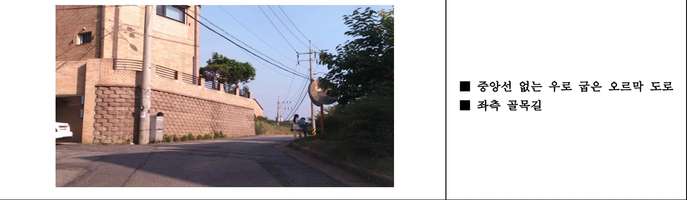

696. Hai cách lái xe nào là an toàn nhất trong tình huống sau?

- ①Vì có người đi bộ ở phía bên phải đường nên đi nhanh qua.
- ②Ở những nơi khó quan sát xung quanh, kiểm tra tình hình giao thông bằng gương cầu lồi trên đường.
- ③Vì trong hẻm bên trái có xe, nên phải quan sát kỹ trước khi tiến vào đường giao nhau rồi từ từ tiến vào đường giao nhau.
- ④Vì khó kiểm tra tình hình phía trước do đường lên dốc uốn cong về bên phải, nên phải liên tục nhấn còi và đi qua.
- ⑤Dù có xe ở phía đối diện đi xuống, thì xe đi lên luôn được ưu tiên hơn nên cứ tiếp tục đi mà không cần giảm tốc độ.
Xem đáp án
Đáp án
② Ở những nơi khó quan sát xung quanh, kiểm tra tình hình giao thông bằng gương cầu lồi trên đường.
③ Vì trong hẻm bên trái có xe, nên phải quan sát kỹ trước khi tiến vào đường giao nhau rồi từ từ tiến vào đường giao nhau.
Căn cứ
Sẽ an toàn hơn nếu bạn kiểm tra rõ ràng độ an toàn của ngõ bên trái qua gương cầu giao thông và lái xe chậm trước khi vào ngã tư để đi qua ngã tư không có đèn giao thông. Vì có người đi bộ ở bên phải nên sẽ an toàn hơn khi đảm bảo an toàn và tiếp tục đi chậm lại hoặc tạm dừng thay vì bấm còi. Theo Điều 20 Luật Giao thông đường bộ, khi lái xe ngược chiều nhau trên đường hẹp, dốc thì xe đi lên phải nhường đường.
Phần căn cứ là bản dịch máy để tham khảo.